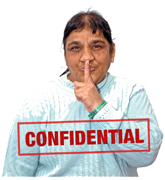
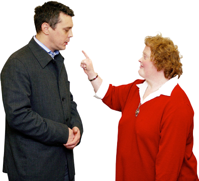
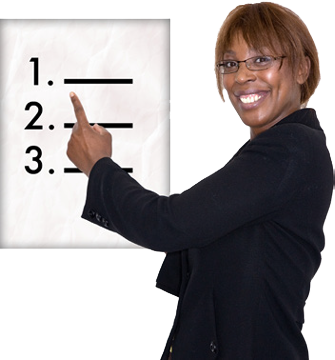

Côd Rhif 1
Bydd gweithiwr gofal cymdeithasol yn eich helpu gyda’ch hawliau. Fe fyddan nhw’n gwrando ar yr hyn rydych chi’n gofyn amdano.

Mae hyn yn meddwl y byddan nhw’n:gweithio gyda chi i’ch helpu i fyw eich bywyd yn y ffordd y buasech chi’n hoffi gwneud. Fe fyddan nhw’n eich cynnwys chi ym mhob penderfyniad ynglŷn â’ch bywyd.

Mae hyn yn meddwl y byddan nhw’n:parchu’r hyn rydych chi’n gofyn amdano. Fe fyddan nhw’n gwrando arnoch chi a’ch gofalwyr.
Mae hyn yn meddwl y byddan nhw’n:cefnogi eich hawl i wneud yr holl benderfyniadau y gallwch ynglŷn â’ch bywyd.

Mae hyn yn meddwl y byddan nhw’n:cadw pethau mor gyfrinachol ag sy’n bosibl. Fe fyddan nhw’n egluro os oes rhaid iddyn nhw rannu pethau â phobl eraill.
Mae hyn yn meddwl y byddan nhw’n:gwneud yn siŵr eich bod yn cael yr un cyfleoedd â phobl eraill.

Mae hyn yn meddwl y byddan nhw’n:gwneud yn siŵr na fyddan nhw’n eich trin chi na’ch gofalwyr yn annheg oherwydd:
beth rydych chi’n ei gredu

Mae hyn yn meddwl y byddan nhw’n:gwneud yn siŵr na fyddan nhw’n eich trin chi na’ch gofalwyr yn annheg oherwydd:
beth sydd orau gennych

Mae hyn yn meddwl y byddan nhw’n:gwneud yn siŵr na fyddan nhw’n eich trin chi na’ch gofalwyr yn annheg oherwydd:
eich diwylliant

Mae hyn yn meddwl y byddan nhw’n:gwneud yn siŵr na fyddan nhw’n eich trin chi na’ch gofalwyr yn annheg oherwydd:
yr iaith rydych chi’n ei siarad

Mae hyn yn meddwl y byddan nhw’n:gwneud yn siŵr na fyddan nhw’n eich trin chi na’ch gofalwyr yn annheg oherwydd:
eich ffordd o fyw.

Côd Rhif 2
Bydd gweithiwr gofal cymdeithasol yn gweithio i’ch cael i ymddiried ynddo a chael eich parch.

Bydd hyn yn meddwl y byddan nhw’n:bod yn onest gyda chi.

Bydd hyn yn meddwl y byddan nhw’n:ysgrifennu atoch a siarad â chi mewn ffordd y gallwch chi ddeall.

Bydd hyn yn meddwl y byddan nhw’n:gwneud yn siŵr eich bod chi a’ch gofalwyr yn cael dweud pethau yn y ffordd rydych chi’n dewis. Ac mewn iaith sy’n hawdd i chi ei deall.

Bydd hyn yn meddwl y byddan nhw’n:cadw pethau cyfrinachol yn gyfrinachol. Fe fyddan nhw’n egluro os bydd rhaid iddyn nhw rannu rhai pethau â phobl eraill.

Bydd hyn yn meddwl y byddan nhw’n:gwneud beth maen nhw’n dweud y byddan nhw’n ei wneud, ar yr adeg maen nhw’n dweud y byddan nhw’n ei wneud.
Bydd hyn yn meddwl y byddan nhw’n:ambell dro efallai y byddan nhw’n newid beth maen nhw wedi cytuno i’w wneud. Yna fe fyddan nhw’n egluro pam wrthych chi.

Bydd hyn yn meddwl y byddan nhw’n:dweud wrthych chi am unrhyw beth sy’n ei gwneud hi’n anodd iddyn nhw weithio gyda chi.

Bydd hyn yn meddwl y byddan nhw’n:peidio â chymryd anrhegion ac arian oddi wrthych chi na’ch gofalwyr. Dydyn nhw ddim yn cael gwneud hynny.

Côd Rhif 3
Bydd gweithiwr gofal cymdeithasol yn eich helpu i roi eich barn a bod yn ddiogel.

Bydd hyn yn meddwl y byddan nhw’n:eich cefnogi i fod yn iach a theimlo’n dda ynglŷn â’ch bywyd.

Bydd hyn yn meddwl y byddan nhw’n:cefnogi eich gofalwyr i fod yn iach a theimlo’n dda ynglŷn â’u bywyd.

Bydd hyn yn meddwl y byddan nhw’n:cefnogi eich hawl i achub eich cam eich hun.
Bydd hyn yn meddwl y byddan nhw’n:cefnogi hawl eich gofalwyr i achub eu cam eu hunain.

Bydd hyn yn meddwl y byddan nhw’n:bod yn ofalus yn y gwaith a chadw eu hunain a chi yn ddiogel.

Bydd hyn yn meddwl y byddan nhw’n:dweud os bydd rhywun yn cael ei gam-drin. (Byddwch yn cael eich cam-drin os bydd rhywun yn eich brifo neu’n eich trin yn wael.)

Bydd hyn yn meddwl y byddan nhw’n:dweud os byddwch yn cael eich trin mewn ffordd annheg neu ffordd sydd ddim yn ddiogel.

Bydd hyn yn meddwl y byddan nhw’n:dweud os bydd unrhyw beth o’ch cwmpas ddim yn ddiogel.

Bydd hyn yn meddwl y byddan nhw’n:dweud pan fydd staff yn gweithio mewn ffordd sydd ddim yn dda nac yn ddiogel.

Bydd hyn yn meddwl y byddan nhw’n:eich cefnogi chi a’ch gofalwyr i gwyno.
Bydd hyn yn meddwl y byddan nhw’n:cymryd gofal i beidio â chymryd dewisiadau oddi arnoch chi.

Côd Rhif 4
Bydd gweithiwr gofal cymdeithasol yn parchu eich hawliau ac yn eich helpu i fod yn ddiogel.

Bydd hyn yn meddwl y byddan nhw’n:gwybod bod gennych chi’r hawl i fentro.

Bydd hyn yn meddwl y byddan nhw’n:rhoi cefnogaeth i chi gadw’n ddiogel.

Bydd hyn yn meddwl y byddan nhw’n:edrych beth allai ddigwydd os byddwch chi’n gwneud rhywbeth a allai fod yn beryglus.

Bydd hyn yn meddwl y byddan nhw’n:rhoi cefnogaeth i chi i gadw’n ddiogel os byddwch chi’n gwneud rhywbeth a allai fod yn beryglus.

Bydd hyn yn meddwl y byddan nhw’n:ysgrifennu hyn i gyd i lawr. Ei roi i aelodau eraill o staff sydd angen gwybod am hyn.

Côd Rhif 5
Mae pawb yn ymddiried mewn gweithiwr gofal cymdeithasol i wneud gwaith da.

Bydd hyn yn meddwl na fyddan nhw’n:eich brifo na’ch cam-drin chi, eich gofalwyr na gweithwyr eraill.
Bydd hyn yn meddwl na fyddan nhw’n:eich trin chi, eich gofalwyr na gweithwyr eraill mewn ffordd annheg.

Bydd hyn yn meddwl na fyddan nhw’n:defnyddio pethau maen nhw’n wybod amdanoch chi na’ch gofalwyr mewn ffordd wael.

Bydd hyn yn meddwl na fyddan nhw’n:ymddwyn gyda chi na’ch gofalwyr mewn ffordd sydd ddim yn dda i chi.

Bydd hyn yn meddwl na fyddan nhw’n:gadael i bobl eraill eich trin mewn ffordd annheg.

Bydd hyn yn meddwl na fyddan nhw’n:eich rhoi chi na phobl eraill mewn perygl o gael eich brifo.
Bydd hyn yn meddwl na fyddan nhw’n:ymddwyn yn wael, yn y gwaith na’r tu allan i’r gwaith.

Côd Rhif 6
Bydd gweithiwr gofal cymdeithasol yn gwneud gwaith da ac yn cael hyfforddiant da.

Bydd hyn yn meddwl y byddan nhw’n:cadw at reolau eu gwaith a rheolau’r gyfraith.

Bydd hyn yn meddwl y byddan nhw’n:ysgrifennu beth sy’n digwydd a beth sy’n cael ei ddweud wrthyn nhw.

Bydd hyn yn meddwl y byddan nhw’n:bod yn onest pan fydd pethau’n mynd o’i le.
Bydd hyn yn meddwl y byddan nhw’n:gofyn am help pan fydd ei angen arnyn nhw.

Bydd hyn yn meddwl y byddan nhw’n:gweithio’n dda gyda phobl eraill.
Bydd hyn yn meddwl y byddan nhw’n:mynd am hyfforddiant i gadw gyda’r oes.

Bydd hyn yn meddwl y byddan nhw’n:helpu i ateb unrhyw gwestiynau os bydd rhywbeth wedi mynd o’i le.

Côd Rhif 7
Bydd gweithiwr gofal cymdeithasol sydd yn bennaeth yn dweud wrth staff am y codau hyn.

Mae hyn yn meddwl y byddan nhw’n:gwneud yn siŵr bod staff yn gwybod sut i ddefnyddio’r codau hyn.
Mae hyn yn meddwl y byddan nhw’n:rhoi amser i dimau staff siarad ynglŷn â defnyddio’r codau hyn.

Mae hyn yn meddwl y byddan nhw’n:rhoi hyfforddiant i staff i’w helpu i wneud eu gwaith yn well.
Mae hyn yn meddwl y byddan nhw’n:cyfarfod ag un aelod o staff ar y tro i feddwl am eu gwaith.

Mae hyn yn meddwl y byddan nhw’n:gwrando ar yr hyn mae pobl yn ei ddweud am staff.

Mae hyn yn meddwl y byddan nhw’n:dweud wrthyn nhw pan fyddan nhw’n gwneud gwaith da.

Mae hyn yn meddwl y byddan nhw’n:ei setlo’n syth pan fyddan nhw’n gwneud gwaith gwael.